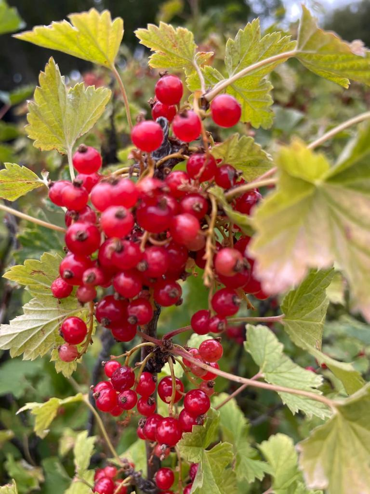

NUESTROS CULTIVOS

La Estancia Laguna Esperanza, ubicada en la Patagonia argentina, es un lugar privilegiado para cultivar una variedad de productos regionales gracias a su hermoso entorno natural y su tierra fértil. Los propietarios, la familia Rudd, han aprovechado esta tierra generosa para cultivar una amplia gama de productos que prosperan en la región. Algunos de los productos que se cultivan en Laguna Esperanza incluyen